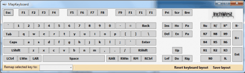

Many computer users think that the functionality provided by different keys on a computer keyboard is fixed in stone and cannot be changed at all. Most might be surprised to hear that it is possible to remap all keys on a computer keyboard in Windows.
But why would someone want to change specific keys on the keyboard so that they have a different functionality? One reason could be to disable or change a key if the functionality of it is never used. Think of the Caps Lock key for instance. It could be disabled or remapped instead of running the risk of pressing it accidentally and switching all keys to Shift-key mode. The Windows-key is another example as it can have side effects if pressed in the wrong situation (think fullscreen applications).
Another example are media keys and special keys. Media keys for instance can be used to play, pause or stop media and change the volume. Not every software on the other hand supports these keys and some users might be inclined to remap the media keys to different keys.
Some users might want to add functionality to a keyboard by adding keys that it does not have. Laptops without a Windows key come to mind as a basic example. Computer keyboard remapping tools can be used to remap a key like Right-Ctrl, or Right-Alt to the Windows key so that the functionality becomes available.
Keyboard Remapping basics
The direct way of remapping keys in Windows is to use the Windows Registry.
HKEY_LOCAL_MACHINE\SYSTEM\CurrentControlSet\Control\Keyboard Layout
The problem with this approach is that the user needs to know the scan codes to change a key's functionality. An extensive list of scan codes is available at
Us Netizen near the bottom of the page.
The article explains how to directly remap keys in the Registry. A creation of a System Restore Point is advised before changing any keys directly.
Remap Software
A better approach for most users is to use a software instead of directly editing the Registry. A software usually has two advantages.
- It often provides a visual representation of the keyboard which makes the identification of keys easier
- The scan codes are irrelevant as the program does all the remapping automatically
The programs automate the process of remapping the keys in the Registry. They do not need to be running in the background once the keys have been edited.
Sharp Keys
We have reviewed Sharp Keys some time ago. The program does not display a visual representation of the keyboard, just a list of supported keys. The portable software supports key identification making it easier to find a key in the list. A key can be remapped by selecting it in the left column and selecting the new key in the right column afterwards.
remap keyboard
Map Keyboard
This portable 30K application displays a visual keyboard on screen. Keys can be changed by selecting them first with the left mouse button and picking a remap key in the pull down menu afterwards. All remapped keys are displayed in green. There is also an option to save the layout and reset the keyboard layout in case something went wrong or is no longer needed.

Map Keyboard does not support media keys and other special keys. Users who need that functionality have to rely on Sharp Keys or the keyboard remapper KeyTweak instead.
KeyTweak
KeyTweak is the most advanced program of this guide. It supports standard keyboard layouts and specialty buttons. The program offers a teach mode that comes in handy to identify and remap keys. The teach mode is also helpful if the key is not displayed as part of the virtual keyboard. KeyTweak will recognize the scan code of the key in teach mode so that it can be changed.
Keys can either be changed by using the handy teach mode or by clicking on a key in the program's interface right away. The Choose new remapping menu holds all the keys that the selected key can be remapped to.
keytweak keyboard remapper
Defaults can be restored with a click and remapped keyboard layouts saved to import them on other computer systems.
KeyTweak contains the functionality of both Sharp Keys and Map Keyboard making it an excellent choice to remap keys. It is on the other hand the only software in this guide that needs to be installed.
All three programs have been tested to work on 32-bit and 64-bit editions of the Windows operating system.
Thanks. Just downloaded Key Tweak. But I had found Sharp Keys to be more useful, it's portable - some folks gets onto their PC one day and found the keys to be behaving in a funky manner ;)
I was just using KeyTweak and on my system, it appears to support only ONE remapping at a time, at least for disabling keys.
I wanted to disable the NumPad Enter button AND the Caps Lock keys. But after disabling one, when I try to disable the other, the previous setting is lost.
Missing links for MapKeyboard and KeyTweak!
added, hosted here at Ghacks.
Hi!
With RSI creeping up, and split keyboards being overpriced, not to mention hard to obtain locally, I am looking for alternatives.
An idea that appeals is to use TWO (USB?) keyboards simultaneously - with the keys on both remapped to obtain the standard QWERTY pattern in the center region.
Thus the keyboard on the left will have its QWERT, ASDFG, and ZXCVB keys remapped to its right side, while the keyboard on the right will have its YUIOP, HJKL;' and NM,./ keys remapped to its left side. etc. Physical keys will also be swapped to obtain a split-QUERTY like keyboard with extra unused keys on the outside on both physical keyboards. The two keyboards can now be placed as near or far as comfortable for each user.
Unfortunately, I am not too sure how to accomplish this - keystrokes of both keyboards will have to be captured and treated differently based on which USB port they came from. Can this even be done merely by fiddling with the windows registry? Is there any software out there that can accomplish this?
Thx.
what keyboard remapping program is compatible with windows 8 on a HP computer?
Hi Frank!
I use ATNSOFT Key Manager. This software excellently remaps keys and mouse buttons, even in Windows 8 Store (Metro) apps. And you can set it to have the remappings work only in certain programs. I love it!
Is it possible to reprogram keys on Windows Mobile 6.1 and 6.5?
Cause we're using barcode scanner that have 2 unused keys and want to program to function as a plus and a minus.
For years I've used KeysPlus [or Keys+] in Windows-XP and later. The beauty is it can lay out whole words or phrases by using key combinations such as Alt-Ctl-Z to lay out 95136 my ZIP-code or Shift-Ctl-A for my whole 3-line address. This is on my laptops.
Ctl-F8 puts out my longish email address. It also can run Macro actions such as the "Back" action in your browser, etc. I have it launch at bootup. The maps can be swapped without re-booting.
Trouble is the latest Windows8 or else the latest IE9 and IE10 browsers are not working well:
I can use it in Word 2007, in Notepad, but it is failing in Internet Explorer [maybe too many Add-ins?] Now the creator Peter Szaszvari has ceased developing it.
****** Does anyone know of another application with this kind of power?